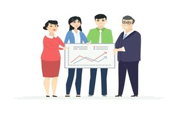
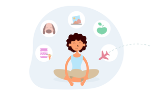

About Me
I am a passionate traveler / musician. It has always been my dream to travel the world. However I had an obsctacle to overcome - money!. I wondered if it were possible to make money despite constantly changing city and often country. I tried many things, including but not limited to:
- Stocks
- Poker
- Marketing
- Accounting
After many failures and minor successes I discovered web development. I was immediately hooked and am now aspiring to one day run my own web development business from my laptop. This way I can still travel, while also making money by doing something I am passionate about.
My Goals
My primary goal is to one day run my own web development business from my laptop. However I also have a number of small goals that I will need to achieve in order to make this possible. Below are the topics / languages I hope to have an advanced knowledge in:
- HTML
- CSS
- JavaScript
- Python
- PHP
I plan on completing all of the Treehouse's tech-degrees before moving on to personal projects. Once I feel as though I am competent in the web development space - I will begin applying for jobs & contracts in my area. I have no doubt I will be ready by 2021.
My Hobbies
Because of my curious nature and interest in a large variety of topics I often spend my time learning. See below for a small list of hobbies I enjoy filling my time with
- Exercise
- Reading
- Guitar
- Coding!
I am hoping to one day learn Piano and Spanish - however for now I simply don't have the time..
